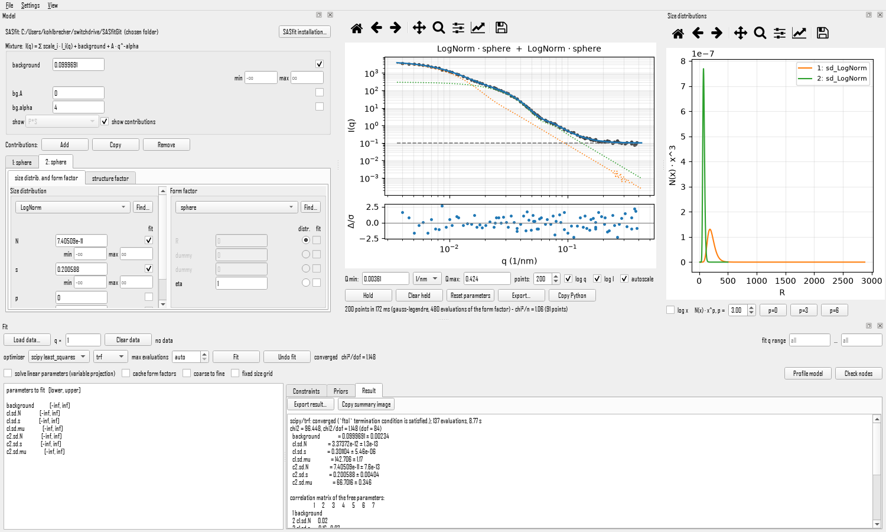
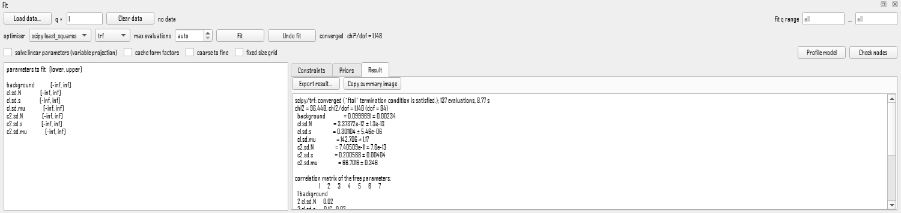

Getting started
Install
cd pySASfit
pip install -e ".[gui]" # library + the explorer (PySide6, matplotlib)
pip install -e ".[fit,export]" # optional: more optimisers (nlopt, bumps, iminuit, cma, DFO-LS), Excel export
pysasfit-studio install-binaries C:/Users/<you>/switchdrive/SASstudio # the compiled SASfit libraries, once
pysasfit-studio status
status lists the folders where the libraries, the plugin headers and the group files (*.def) were found. It
must show a SASfit libraries folder; if not, point PYSASFIT_SASFIT_LIB to the folder with libsasfit.dll
(.so, .dylib) or choose it in the explorer under Settings → SASfit installation…. The catalogue (names,
parameters, search) works without the libraries; evaluating a function needs them.
A first look at the functions
print(studio.info("ff_sphere")) # parameters with descriptions
for hit in studio.search("hard", "sphere", type="sq"): # search the catalogue (works without the libraries)
print(hit.name, "-", hit.label)
Names start with the type: ff_ form factor, sq_ structure factor, sd_ size distribution, peak_ peak
functions. The same from the command line:
pysasfit-studio search hard sphere --type sq
pysasfit-studio info ff_sphere
pysasfit-studio tree ff # menu tree of the form factors
A first plot
pysasfit-explorer ff_sphere --sd sd_LogNorm --sq sq_hardsphere

The model explorer: model dock on the left, plot with data, fit and residuals in the middle, fit dock below, size distribution on the right.
Change a value in the model dock and the curve follows. The model explorer explains the window.
A first fit
Open the Fit dock (View → Fit), press Load data… and choose
examples/studio/data/SASfitTestData/test.dat.Set the start values so that the curve is roughly where the data are.
Tick the fit box next to the parameters that may change (mean, width and amplitude of the distribution, background). Give each a lower and an upper bound in the two small fields that appear.
Press Fit. The Result tab shows the values with errors, χ²/dof, and the correlations.

The Result tab: values with errors, χ²/dof and the correlation matrix.
The same fit as a script is in Scripting.